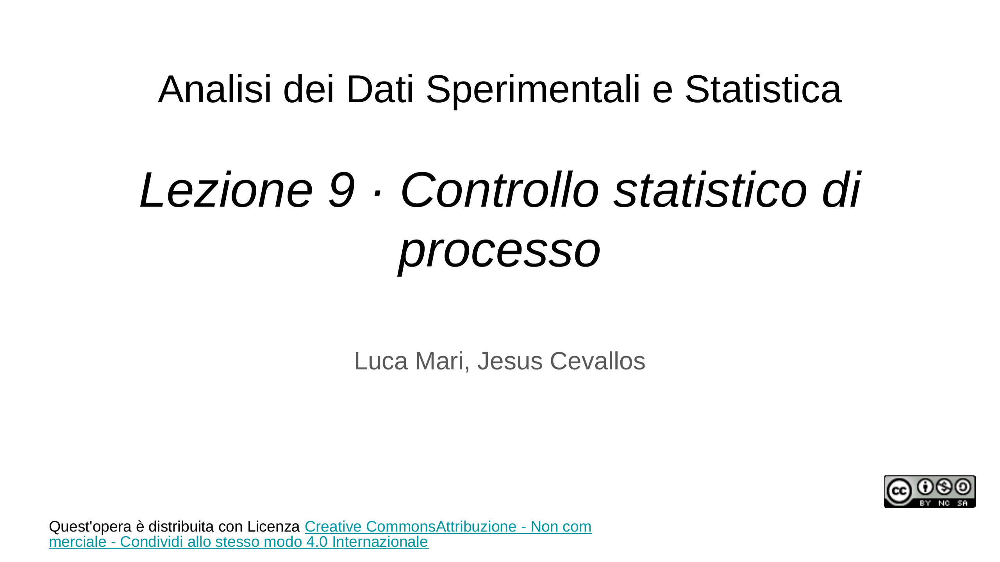
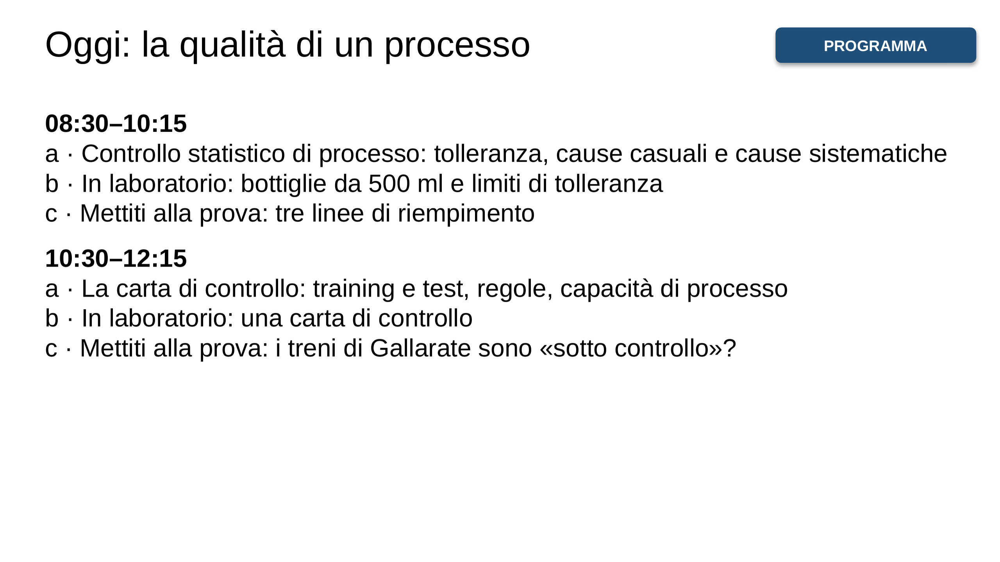
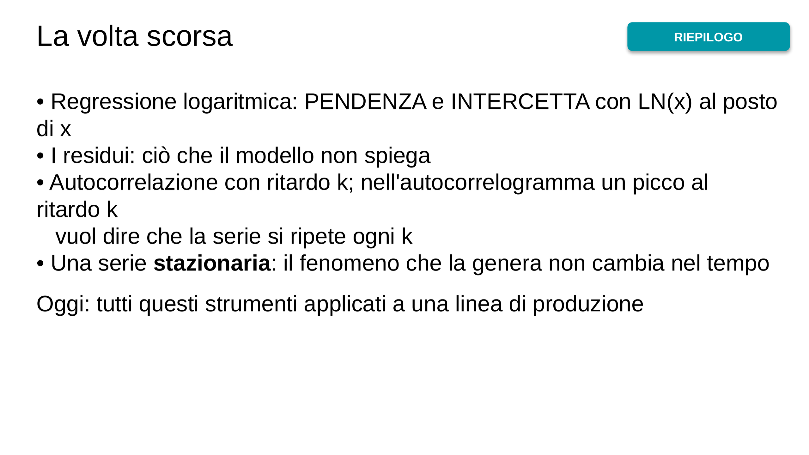
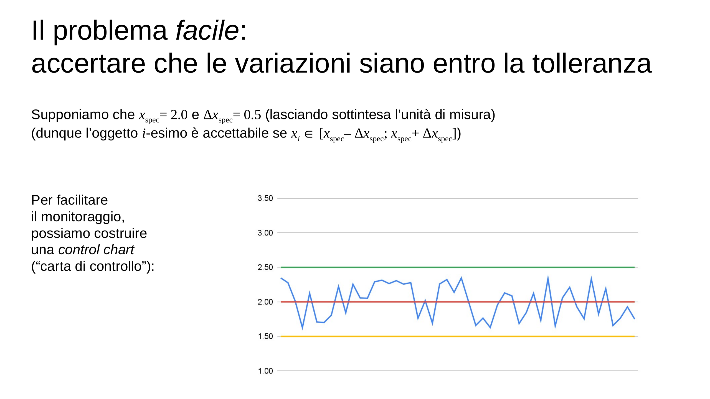
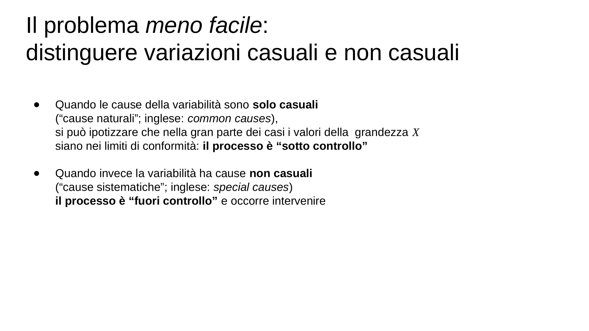
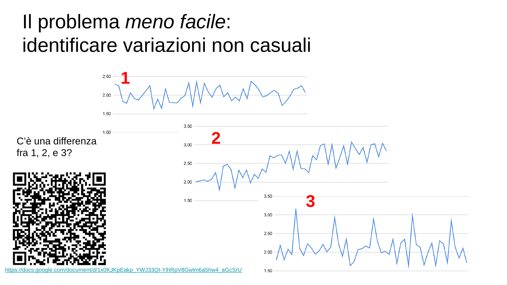
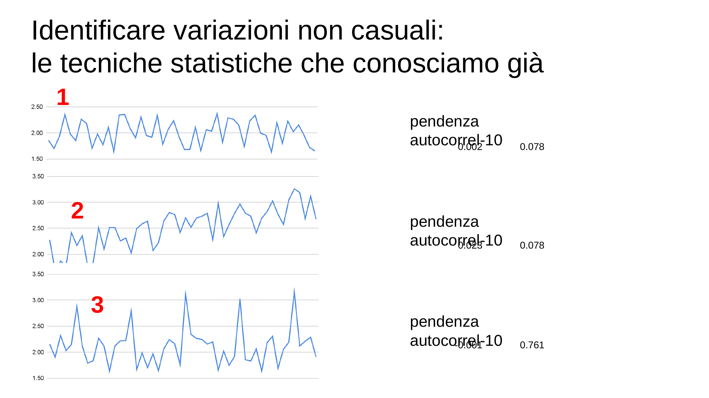
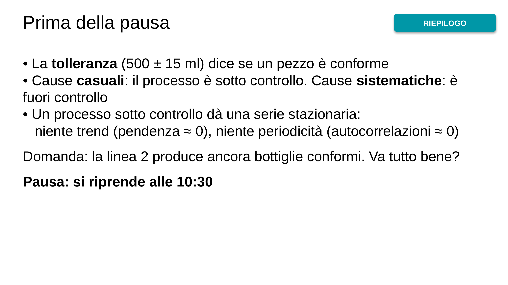
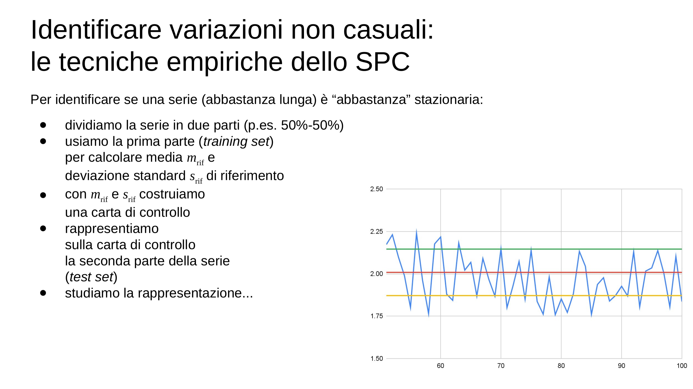
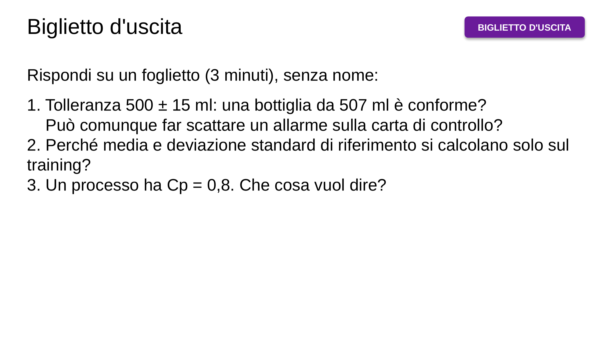

![Qualche suggerimento: – consulta l’“Aula Virtuale” su ecorsi – usa il materiale didattico, e non solo i tuoi appunti – frequenta le lezioni, e fallo in modo attivo, anche nella parte “laboratoriale” – lavora in modo costante – confrontati regolarmente con qualche compagna/o – cerca di capire e di imparare a risolvere problemi, non di memorizzare · (vedi il materiale didattico, capitolo 4. Analisi di serie storiche) (e puoi valutare le tue conoscenze e competenze a partire dagli esempi di problemi proposti)](img/03-1f7ca589cc.webp)
![Un esempio di analisi di serie storiche: il controllo statistico di processo (SPC) · Contesto: produzione ripetitiva controllo di qualità in termini di conformità a specifiche → Gli oggetti prodotti sono caratterizzati da una grandezza X di cui sono specificati il valore nominale xspec e la tolleranza Δxspec → Si misura X sugli oggetti prodotti, ottenendo una serie storica 〈xi〉 → Si ammette che il processo di produzione sia non perfettamente stabile, e dunque che xi ≠ xspec → Si vuole però evitare di produrre oggetti non conformi alle specifiche](img/06-f3d0c502ae.webp)
![Identificare variazioni non casuali: sintesi · Una serie storica〈xi〉si dice stazionaria se in differenti parti della serie: la sua media m non cambia la sua deviazione standard s non cambia la sua autocorrelazione di periodo j, per ogni j, non cambia · Si suppone che ogni elemento xi della serie sia un valore di una variabile casuale e queste variabili casuali siano indipendenti e identicamente distribuite (IID) · Se la serie storica delle misure della grandezza X è “abbastanza” stazionaria, il processo è sotto controllo · Lo SPC mette a disposizione delle tecniche empiriche per accertare p…](img/11-b7420d9c48.webp)
![In laboratorio: bottiglie da 500 ml · LABORATORIO · A1 bottiglia, B1 volume (ml), C1 limite inferiore, D1 limite superiore I2 valore nominale 500; I3 tolleranza ± 15; I4 variabilità della macchina 8 A2 1, A3 =A2+1 fino ad A101 B2 =$I$2+$I$4*(CASUALE()+CASUALE()+CASUALE()-1,5) fino a B101 C2 =$I$2-$I$3 D2 =$I$2+$I$3 fino alla riga 101 Grafico di A1:D101 (dispersione con linee rette) I6 =CONTA.SE(B2:B101;"<"&C2)+CONTA.SE(B2:B101;">"&D2) bottiglie non conformi Prova I4 = 12, poi 16: che cosa succede?](img/12-0df679c109.webp)
![Mettiti alla prova! Tre linee di riempimento · CHALLENGE · Tre linee riempiono bottiglie da 500 ml (tolleranza ±15). Simula 100 bottiglie per linea: linea 1: =500+6*(CASUALE()+CASUALE()+CASUALE()-1,5) linea 2: come la linea 1, +0,08*A2 linea 3: come la linea 1, +SE(RESTO(A2;10)=0;8;0) 1. Un grafico per linea. Le bottiglie sono tutte conformi? 2. Per ogni linea: la pendenza della retta di regressione e l'autocorrelazione al ritardo 10 (per la linea 1: =CORRELAZIONE(B12:B101;B2:B91)) 3. Quale linea è «sotto controllo»? Che cosa sta succedendo alle altre due?](img/13-92874dfada.webp)
![Identificare variazioni non casuali: le tecniche empiriche dello SPC /2 · Se la serie è “abbastanza” stazionaria (e quindi se il processo è sotto controllo) mrif e srif sono anche la media e la deviazione standard del test set Ma, se questo è vero, in accordo alla disuguaglianza di Chebyshev almeno 1–1/k2 elementi della serie sotto test stanno entro k deviazioni standard srif dalla media mrif Dunque dovremmo trovare pochi elementi distanti più di 2srif e pochissimi distanti più di 3srif Costruiamo perciò una carta di controllo con linee di controllo a ±2srif e ±3srif:](img/16-1fab2d9072.webp)

![Identificare variazioni non casuali: le tecniche empiriche dello SPC /3 · Un esempio – La serie è non stazionaria se: [regola 1] un elemento è oltre ±3srif [regola 2] 2 su 3 elementi consecutivi sono oltre ±2srif nello stesso lato rispetto a mrif [regola 3] 4 su 5 elementi consecutivi sono oltre ±srif nello stesso lato rispetto a mrif [regola 4] 9 elementi consecutivi sono nello stesso lato rispetto a mrif · Una statistica, chiamata capacità di processo (inglese: process capability), sintetizza l’informazione sulla qualità del processo in termini della sua ripetibilità: · oppure in termini…](img/18-7c4b00a952.webp)
![La capacità di processo, in pratica · Cp = 2 Δx_spec / (6 s) = larghezza della tolleranza / larghezza «naturale» del processo (6 deviazioni standard: da −3 s a +3 s) • Cp < 1: il processo è più largo della tolleranza: produce scarti anche quando è stabile e centrato • Cp ≥ 1: ci sta; nell'industria spesso si chiede almeno 1,33 • Esempio: tolleranza ±15 ml, s = 4 ml → Cp = 30 / 24 = 1,25 Nella prima formula, 6 s_rif / 6 s, al posto della tolleranza c'è la fascia di controllo del training, e s è la deviazione standard del test: Cp < 1 vuol dire «più disperso di prima».](img/19-6b337bab37.webp)
![In laboratorio: la carta di controllo · LABORATORIO · Foglio nuovo. K2 500 (valore nominale), K3 8 (variabilità), K4 0,2 (deriva dopo la bottiglia 50) A2:A101 le bottiglie 1…100; B2: =$K$2+$K$3*(CASUALE()+CASUALE()+CASUALE()-1,5)+SE(A2>50;$K$4*(A2-50);0) Training = bottiglie 1–50: K6 =MEDIA(B2:B51) K7 =DEV.ST.C(B2:B51) C2 =$K$6 D2 =$K$6+2*$K$7 E2 =$K$6-2*$K$7 F2 =$K$6+3*$K$7 G2 =$K$6-3*$K$7 Grafico di A1:G101 H52 =SE(ASS(B52-$K$6)>3*$K$7;1;0) fino a H101: 1 = allarme Da quale bottiglia scatta il primo allarme? Quanto vale Cp?](img/20-0d08877856.webp)
![Mettiti alla prova! Gallarate è sotto controllo? · CHALLENGE · File ritardi_treni_gallarate.xlsx, foglio «Gallarate_2023_2024» (731 giorni) Il 2023 (righe 2–366) è il training, il 2024 (righe 367–732) è il test. 1. Media e deviazione standard di riferimento, sul 2023 2. Carta di controllo con le linee della media, di +2 s e di +3 s; grafico dei 731 giorni 3. Quanti giorni del 2024 superano +3 s? E +2 s? 4. Quale frazione dei giorni del 2024 sta sopra la media del 2023? 5. I ritardi del 2024 sono «sotto controllo» rispetto al 2023? Che cosa rende questi dati diversi dalle bottiglie?](img/21-28d5431d93.webp)
![In sintesi · RIEPILOGO · • Tolleranza: il pezzo è conforme? Controllo: il processo è stabile? • Carta di controllo: media e deviazione standard dal training; linee a ±2 s e ±3 s; si guarda il test • Chebyshev: se il processo è stabile, almeno il 75% dei punti è entro ±2 s e l'89% entro ±3 s • Regole: un punto oltre ±3 s; 2 su 3 oltre ±2 s; 4 su 5 oltre ±1 s; 9 di fila dalla stessa parte • Cp = 2 Δ / (6 s): il processo, quando è stabile, sta dentro la tolleranza? La prossima volta (15/12): medie di medie e teorema del limite centrale](img/22-c7b91f1e9f.webp)